01 / ANALYSIS
交通轉向量與車流量
辨識車輛進出方向，統計各方向與車種的流量，呈現路口直行、左轉、右轉等轉向量，作為交通調查與號誌檢討的基礎。
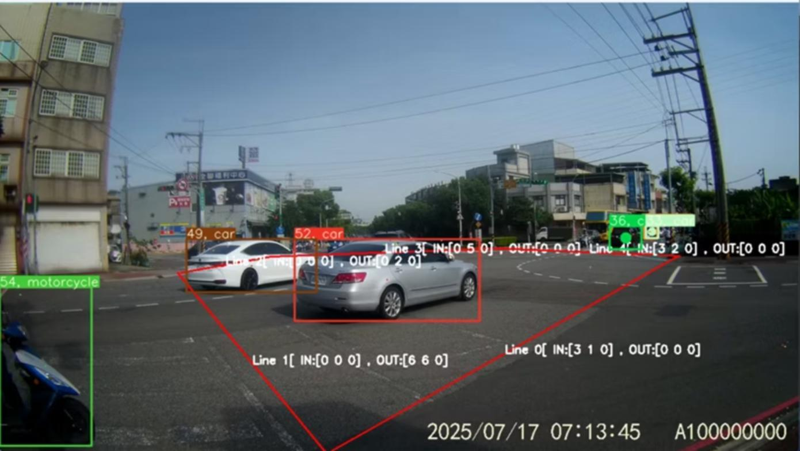
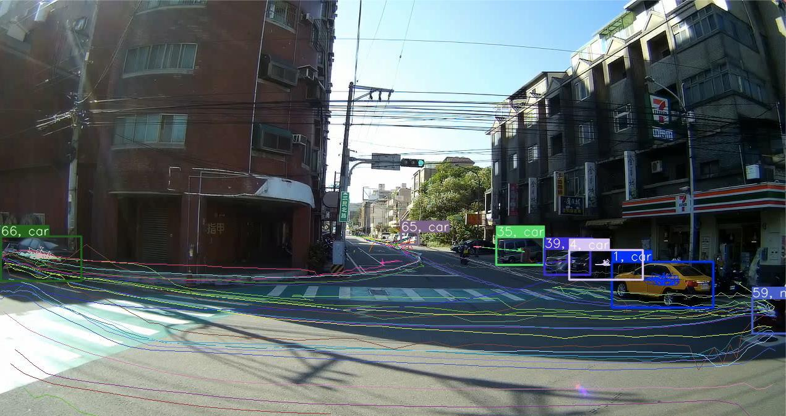
交通轉向量調查仍高度仰賴人工逐車計數。羅伯斯特以物件追蹤、物件再辨識與在地資料為基礎，搭配低成本取像架設方案，提供 Street Eye 智慧交通分析與安全診斷服務，降低調查所需人力與計算成本。
交通轉向量是服務核心之一。同一次分析也能取得車停時間、車流軌跡、潛在碰撞與衝突熱點、路口或車道平均速率，並產出路口及道路服務水準結果，讓交通調查資料進一步支援效率評估與安全診斷。
WHY STREET EYE
人工逐車計數能回答「有多少車往哪裡走」，但當需求延伸到停等、軌跡、速率與交通衝突時，往往需要針對各項問題另行分析。
Street Eye 以持續追蹤的車輛資料為基礎，將轉向量與多項交通指標放進同一分析流程。客戶可由同一批影像了解車流的數量、移動方式、停等情形及潛在風險，減少逐項另做人工分析的工作。
ANALYSIS OUTPUTS
01 / ANALYSIS
辨識車輛進出方向，統計各方向與車種的流量，呈現路口直行、左轉、右轉等轉向量，作為交通調查與號誌檢討的基礎。

02 / ANALYSIS
追蹤同一車輛在觀測範圍內的停止時間，呈現停等情況，提供路口服務品質分析所需資料。
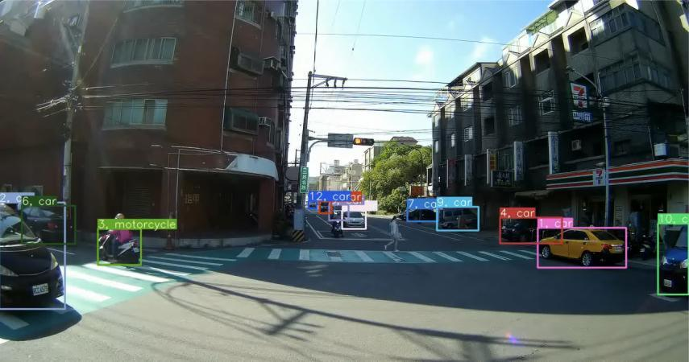
03 / ANALYSIS
以連續追蹤結果重建車輛行駛路徑，呈現實際直行與轉向動線，協助觀察交織、偏移與車道使用情況。
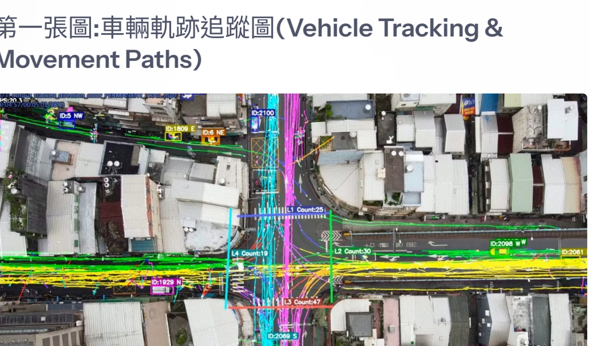
04 / ANALYSIS
結合軌跡與時間資訊分析車流交會情形，呈現疑似衝突事件及熱點分布，供交通安全診斷參考。熱點代表需進一步檢視的潛在風險，不等同已發生事故的紀錄。
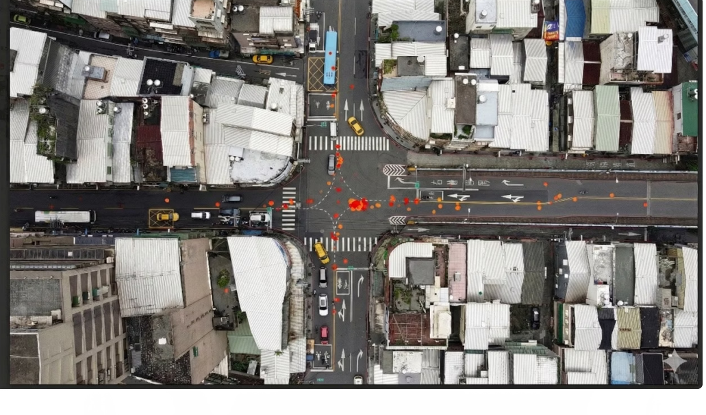
05 / ANALYSIS
結合影像中的距離與移動時間資訊，分析路口或車道平均速率，以速率分布與熱區圖協助觀察緩行、停滯及車流變化。
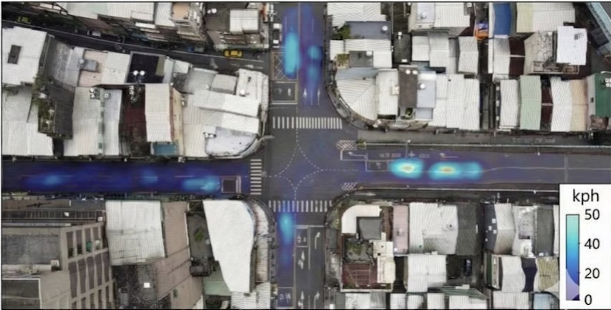
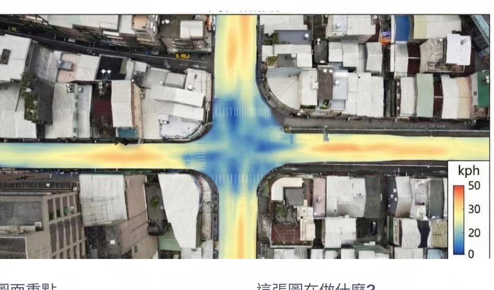
06 / ANALYSIS
運用交通分析結果提供路口與道路服務水準評估，協助交通專業人員掌握運作情況，作為後續規劃與檢討參考。
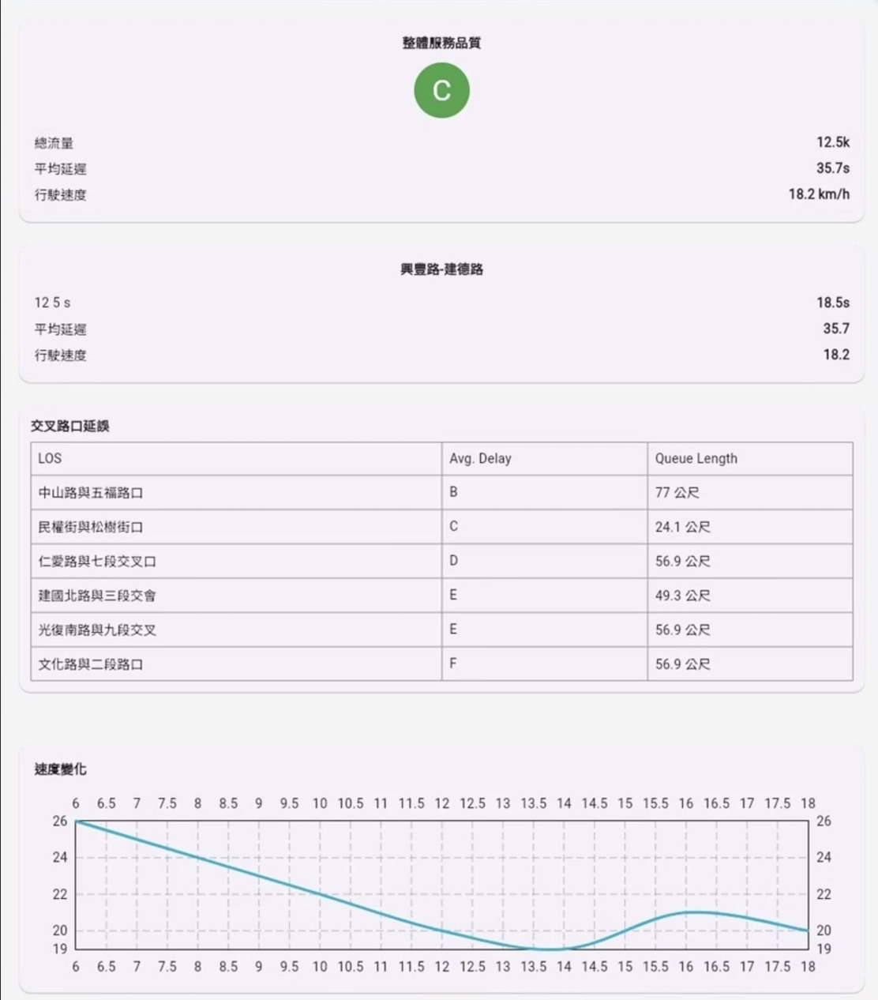
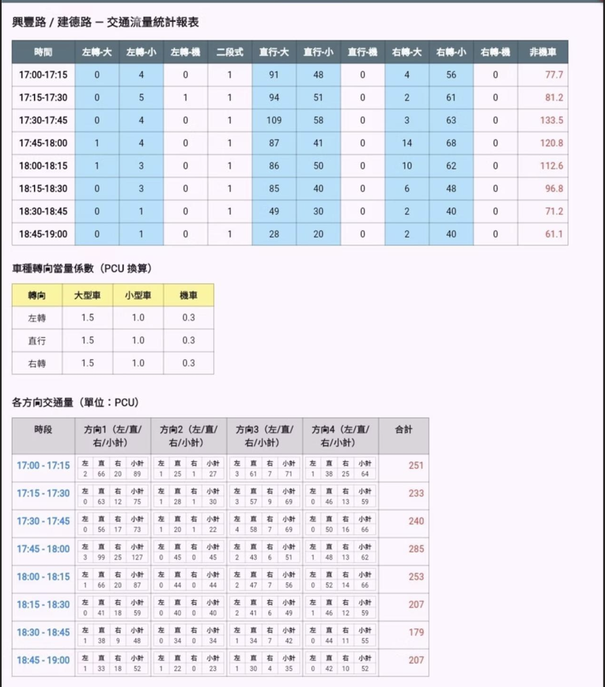
MOT / RE-ID
持續記錄車輛在不同影格中的位置與移動狀態，建立車流分析所需的時間與軌跡資料。
車輛受到遮擋後重新出現時，透過特徵比對協助辨認是否為同一車輛，降低識別編號變更造成的重複計數與軌跡中斷。
團隊針對台灣交通影像建立在地車輛資料，補充機車、汽車與大型車等車種的特徵差異，支援模型訓練與辨識優化。
結合再辨識與 Match Buffer 機制，處理車輛短暫被遮擋後重新進入畫面的情況，改善追蹤連續性，支援後續流量與停等分析。
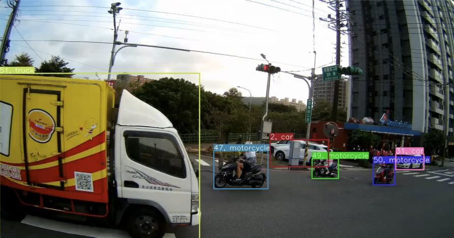
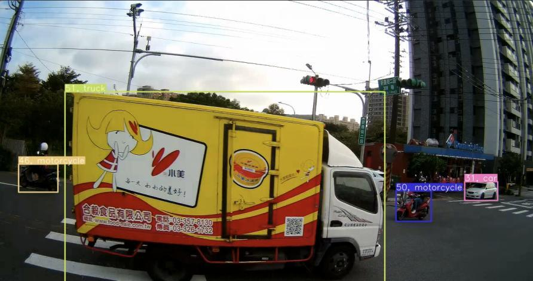
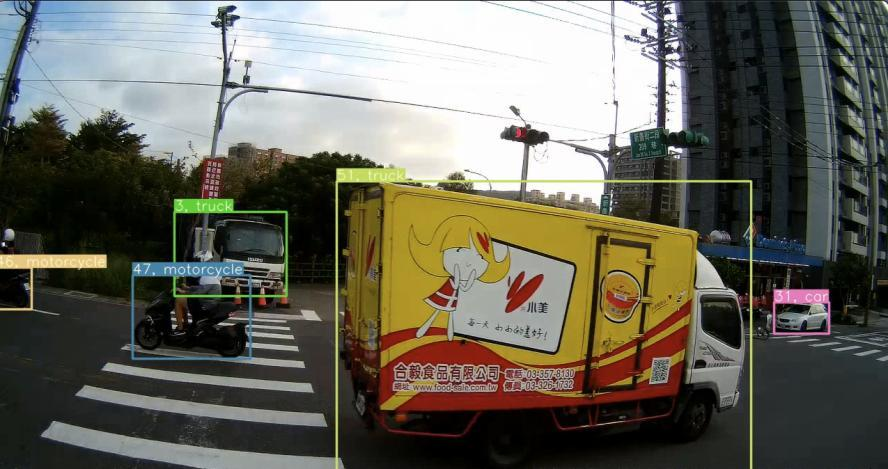
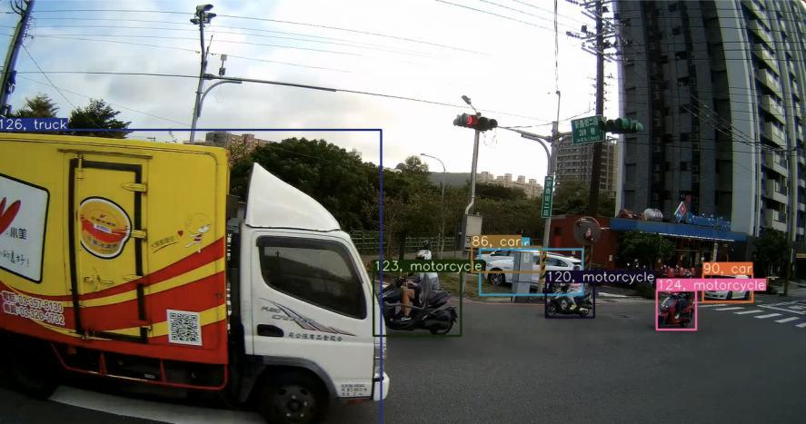
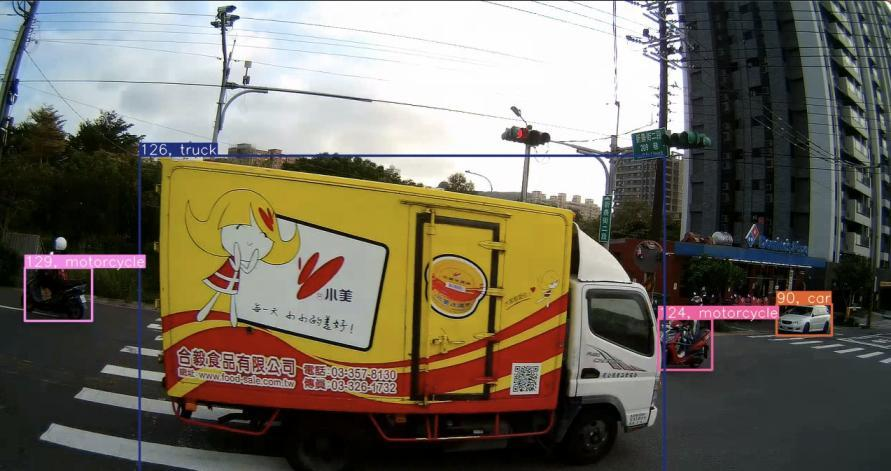
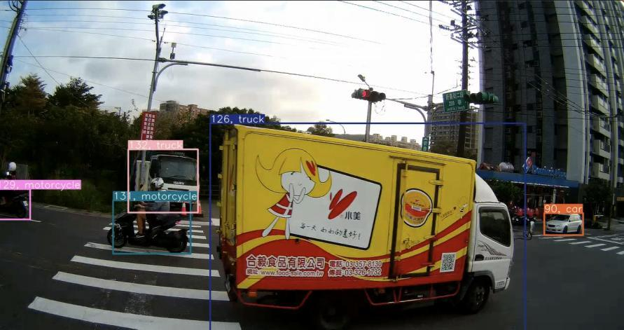
同一車輛遮擋前後，系統維持相同追蹤編號，銜接行駛軌跡。此圖為特定場景示例，呈現追蹤與再辨識的處理方式。
IMAGE TO INSIGHT
Street Eye 將低成本取像架設與 AI 分析整合，降低相較於人工逐車計數方案的調查成本。已有合適影像時，也可運用既有監視器影像進行分析。
服務的價值同時來自資訊深度：流量、停等、軌跡、平均速率與安全熱點可在同一分析流程中取得，讓客戶在交通轉向量之外，進一步使用影像中的交通資訊。
比較對象為以人工計算交通轉向量為主要工作的方案，實際工作範圍依專案需求而定。
人工逐車計數：以人員逐車辨識與累計為主要作業；若需停等、軌跡或速率，通常需另行規劃分析工作。
Street Eye：以 AI 偵測、追蹤與再辨識建立車輛資料，降低逐車計數人力；透過同一流程整合轉向量、停等、軌跡、速率、熱點及服務水準分析。
WHO WE SERVE
提供交通調查、路口運作檢討與安全分析所需資料。
支援交通轉向量調查、服務水準評估及規劃分析工作。
依專案需求提供車流調查與交通分析資訊。
HOW IT WORKS
確認調查路口、觀測期間、車種與轉向分類，以及停等、速率、服務水準或安全診斷等需求。
評估既有影像，或規劃適合場域的低成本取像架設方案，確認拍攝範圍與分析需求。
進行車輛偵測、追蹤、再辨識與多項交通指標分析，彙整影像中的流量、軌跡與時間資訊。
依專案範圍提供統計報表、視覺化圖表與分析成果，供交通專業人員進行規劃與檢討。
PROJECTS & DEVELOPMENT
羅伯斯特與玖泰交通科技共同承接桃園市政府交通調查計畫，進行桃園市約 300 個路口的交通轉向量調查，將 AI 影像分析應用於交通調查工作。
2021 AIGO 競賽
「利用邊緣運算系統，使用 AI 辨識進行智慧交通分析，應用於路口交通量轉向的統計」獲構想獎入圍得獎。
114 年 AIGO 決賽成果簡報
以「使用 AI 辨識進行智慧交通分析，應用於路口交通量轉向的統計」呈現車輛再辨識、在地資料與遮擋後軌跡銜接的技術成果。
FREQUENTLY ASKED
可以。交通轉向量是 Street Eye 的核心服務之一，也可依需求洽詢停等時間、車流軌跡、速率、服務水準與安全熱點等分析。
可先評估既有監視器影像是否適合分析；需要現場取像時，團隊可規劃低成本取像架設方案。
轉向量、停等時間與移動軌跡，都需要辨認車輛前後的連續關係。追蹤與再辨識可協助銜接遮擋前後的同一車輛，降低軌跡中斷對分析的影響。
不一定。衝突熱點是依影像中的車流軌跡與時間資訊分析潛在風險，供專業人員進一步判讀。
請提供欲調查的地點、路口數、調查日期與時段、已有影像情形及希望取得的分析成果，由專人確認需求與專案範圍。
START A CONVERSATION
需要交通影像分析、AI 影像識別或系統整合服務，歡迎提供專案背景、使用場域與預期成果，由專人與您聯繫。
交通專案洽詢建議提供：公司或單位名稱、聯絡方式、調查地點與路口數、預定時段、影像來源及需求成果。
洽詢交通分析專案